标准 VAE 使用连续潜在变量，其分布为高斯形式，对离散的、多模态的数据结构表达有限。VQ-VAE（Vector Quantized Variational Autoencoder）通过向量量化将连续潜在变量离散化，在保持 VAE 表达能力的同时获得离散表示的优势，并为 VQ-VAE-2、DALL-E 等自回归生成模型奠定基础。本章将介绍 VQ-VAE 的动机、理论、损失设计与代码实现。
标准 VAE 使用连续隐变量 \(z \in \mathbb{R}^d\)，例如 \(z \sim \mathcal{N}(\mu_\phi(x), \Sigma_\phi(x))\)。
数学上仍写作:
\[q_\phi(z|x) = \mathcal{N}(z | \mu_\phi(x), \Sigma_\phi(x)) \tag{1}\]
具体局限包括:（1）连续潜在空间难以表达离散、多模态结构；（2）语言、类别等符号数据缺乏天然的连续表示；（3）连续表示的信息容量无界，不利于学习紧凑、有界的离散码。
离散表示在许多场景中更自然、更有效:
| 应用场景 | 离散性的必要性 |
|---|---|
| 多模态分布建模 | 一个输入可能对应多个合理输出（如“下雨”→“带伞”或“取消出行”），连续隐变量难以捕捉这种跳跃性 |
| 分类属性 | 社保号、邮政编码等:数字本身无序，不能用连续值插值 |
| 符号系统 | 语言（词/子词）、语音（音素）、规划（动作序列）——本质是离散符号 |
离散隐变量 = 符号化表示（symbolic representation），更接近人类认知和传统 AI 的“符号主义”，也为与自回归模型、Transformer 等结合铺平道路。
我们仍希望最大化 ELBO:
\[\text{ELBO} = \underbrace{\mathbb{E}_{q_\phi(z|x)}[\log p_\theta(x|z)]}_{\text{重构损失}} - \underbrace{\text{KL}(q_\phi(z|x) \| p(z))}_{\text{正则化损失}} \tag{2}\]
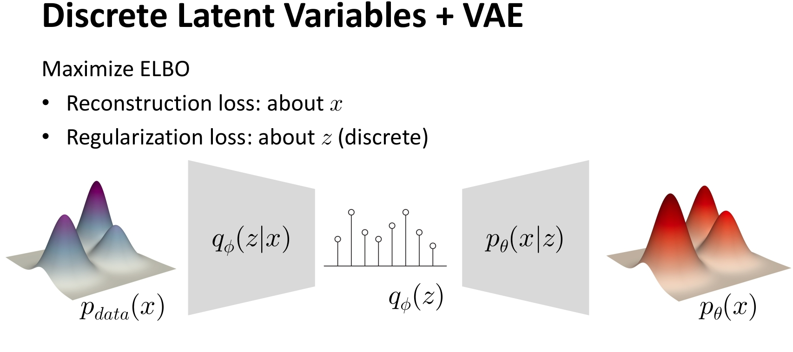
图1 VAE 离散化的结构图。
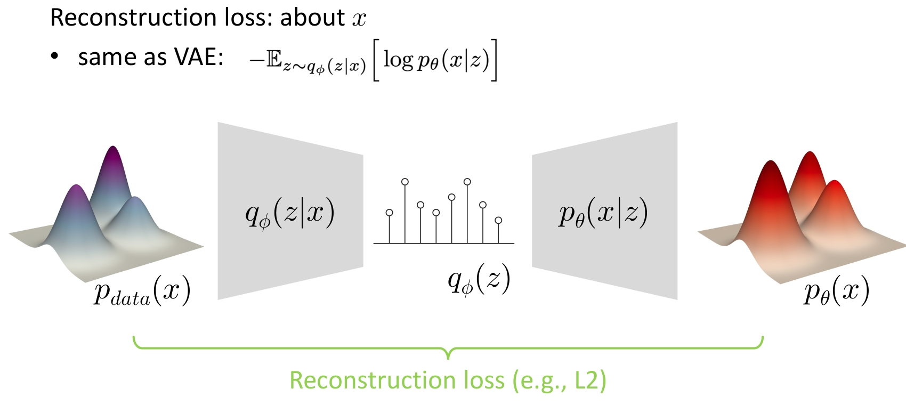
图2 离散 VAE 的重构损失。
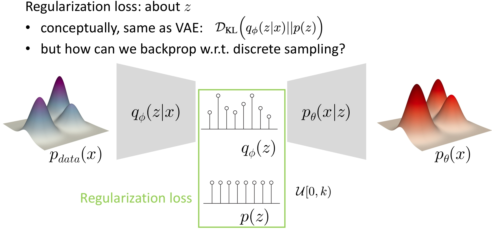
图3 离散 VAE 的正则化损失。
关键问题:若 \(z\) 是离散的（如 one-hot 或 \(\arg\max\) 得到的索引），采样过程不可导，梯度无法从解码器流回编码器，无法端到端训练。因此需要可微的离散近似或梯度代理。
K-means 虽简单，但提供了重要启示:
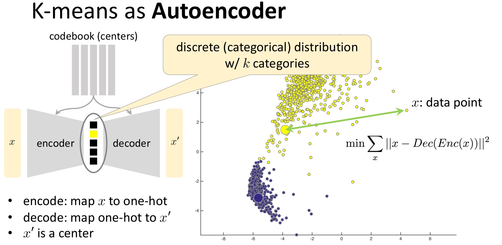
图4 K-means 作为自编码的结构图。
这启发我们:可以用类似“硬分配 + 码本更新”的方式处理离散隐变量，并用直通估计器解决不可微问题，从而得到可端到端训练的离散 VAE——即 VQ-VAE。
VQ-VAE 旨在:
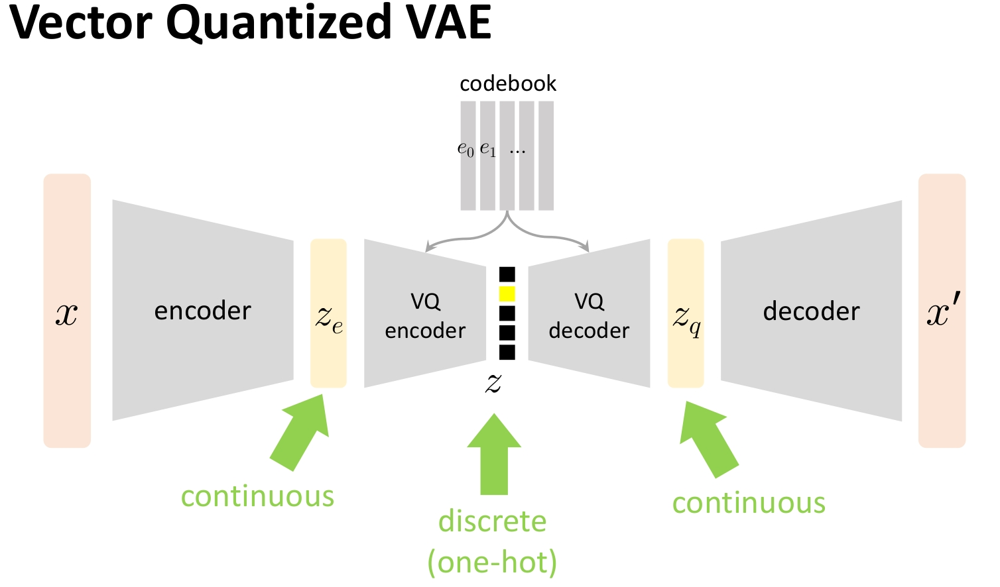
图5 VQ-VAE 架构图:输入经编码器得到连续表示 \(z_e\)，经向量量化得到离散码 \(z_q\)（对应 codebook 中的向量），再经解码器重构。量化通过最近邻查找实现，训练时用直通估计器保证梯度可传。
数据流为:
\[x \xrightarrow{\text{编码器 } E_\phi} z_e \xrightarrow{\text{向量量化 } Q} z_q \xrightarrow{\text{解码器 } D_\theta} \hat{x} \tag{3}\]
组件说明:
编码:
\[z_e = E_\phi(x) \in \mathbb{R}^d \tag{4}\]
量化（最近邻）:
\[k = \arg\min_{j \in \{1,\ldots,K\}} \|z_e - e_j\|^2, \qquad z_q = e_k \tag{5}\]
解码:
\[\hat{x} = D_\theta(z_q) \tag{6}\]
距离采用欧氏距离的平方:\(\|z_e - e_j\|^2 = (z_e - e_j)^T(z_e - e_j)\)，实现时可利用展开形式或预计算 \(e_j^T e_j\) 以加速。
总损失由三部分组成:
\[\mathcal{L}_{total} = \mathcal{L}_{recon} + \mathcal{L}_{codebook} + \beta\,\mathcal{L}_{commitment} \tag{7}\]
重构损失:衡量解码器重构质量。
\[\mathcal{L}_{recon} = \|x - D_\theta(z_q)\|^2 = \|x - \hat{x}\|^2 \tag{8}\]
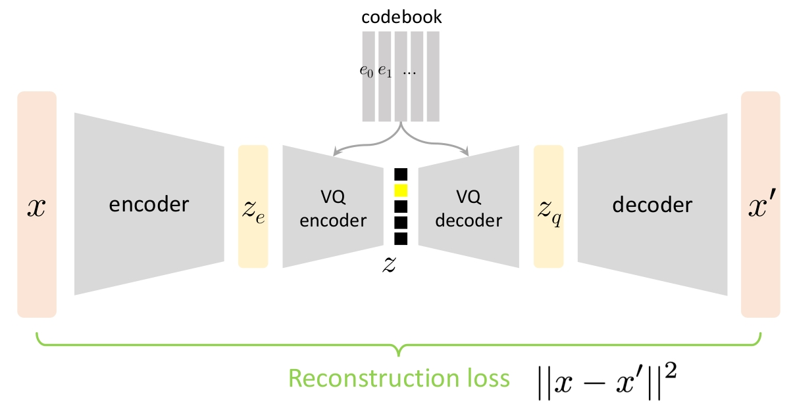
图6 VQ-VAE 的重构损失。
Codebook 损失（Embedding 损失）:把被选中的 codebook 向量 \(e_k\) 拉向编码器输出 \(z_e\)（更新 codebook）。
\[\mathcal{L}_{codebook} = \|z_e - \text{sg}(z_q)\|^2 \tag{9}\]
其中 \(\text{sg}(\cdot)\) 表示停止梯度。梯度只更新 \(e_k\)，不经过 \(z_e\)。
Commitment 损失:把编码器输出 \(z_e\) 拉向量化结果 \(z_q\)，避免编码器输出在 codebook 之间剧烈抖动。
\[\mathcal{L}_{commitment} = \|\text{sg}(z_q) - z_e\|^2 \tag{10}\]
\(\beta\) 为 commitment 权重。
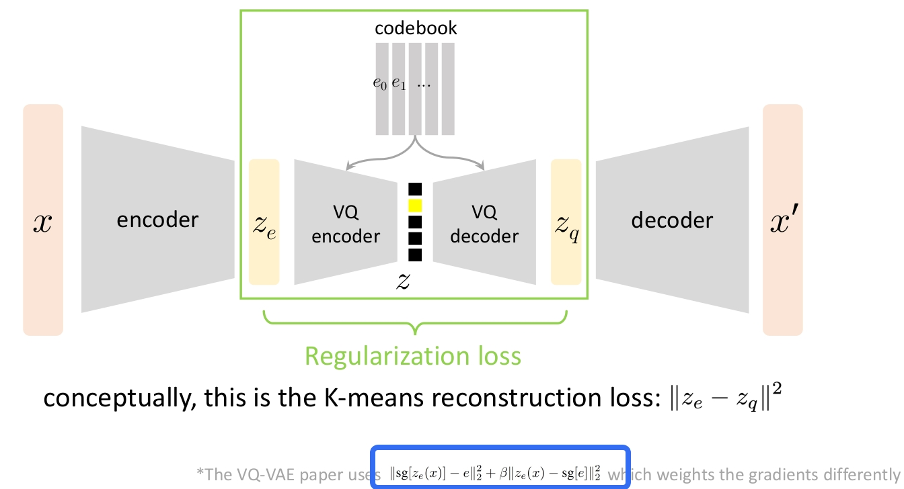
图7 从 VAE 的正则化损失到 VQ-VAE 的 Codebook 损失与 Commitment 损失。
直观理解:VQ-VAE 的损失设计本质上是可微分的 K-means——编码器和解码器是深度网络，码本通过“把 \(e_k\) 拉向 \(z_e\)”（codebook 损失）和“把 \(z_e\) 拉向 \(z_q\)”（commitment 损失）类似 K-means 的方式更新。
梯度流向:
量化 \(Q(z_e)=e_k\) 不可微（\(\arg\min\) 为离散操作），无法直接对 \(z_e\) 反传梯度。
一般形式（用于近似离散采样的梯度）:前向使用 hardmax（\(\arg\max\) + one-hot）得到离散 \(z\)，反向时假装前向用的是 softmax，用 softmax 的梯度回传。实现技巧（PyTorch 风格）:令 \(y = \text{encoder}(x)\)（logits），\(z_{\text{hard}} = \text{hardmax}(y)\)，\(z_{\text{soft}} = \text{softmax}(y)\)，则 \[z = z_{\text{hard}} - z_{\text{soft}}.detach() + z_{\text{soft}} \tag{11}\] 前向取值等于 \(z_{\text{hard}}\)，反向梯度等于对 \(z_{\text{soft}}\) 的梯度。这是一种梯度代理（gradient surrogate），虽无严格理论保证，但在实践中有效（Gumbel-Softmax 等也基于类似思想）。
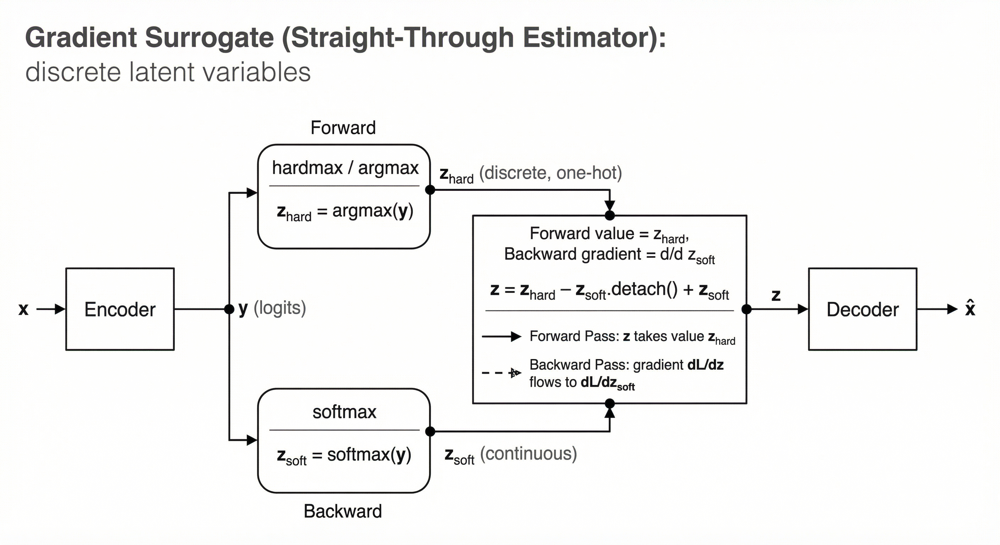
图8 梯度代理（直通估计器一般形式）:前向使用 hardmax 得到离散 \(z_{\text{hard}}\)，反向用 softmax 的梯度回传；通过 \(z = z_{\text{hard}} - z_{\text{soft}}.detach() + z_{\text{soft}}\) 实现前向离散、反向可微。
VQ-VAE 中的直通:前向使用量化结果 \(z_q\)，反传时把损失对 \(z_q\) 的梯度原样传给 \(z_e\)。实现可写为:
\[z_q^{ST} = z_e + (z_q - \text{sg}(z_e)) \tag{12}\]
前向:\(z_q^{ST}\) 的取值等于 \(z_q\)；反向:\(\frac{\partial z_q^{ST}}{\partial z_e} = I\)，因此 \(\frac{\partial \mathcal{L}}{\partial z_e} = \frac{\partial \mathcal{L}}{\partial z_q^{ST}}\)，解码器传来的梯度得以穿过量化层更新编码器。
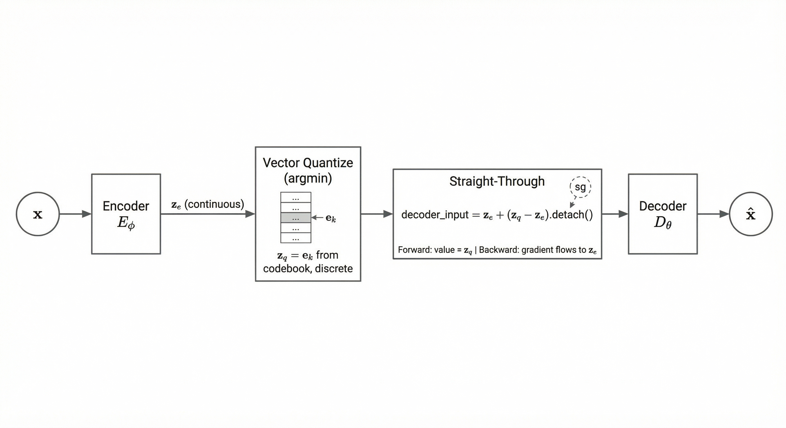
图9 VQ-VAE 的直通:编码器输出 \(z_e\) 经向量量化得 \(z_q\)；解码器输入为 \(z_e + (z_q - z_e).detach()\)，前向取值 \(z_q\)、反向梯度传给 \(z_e\)，使量化层可端到端训练。
整图仅用一个离散 token（如全局 K-means 的簇索引）时，表达能力不足，无法刻画内部结构与空间布局。故需多 token、空间化的离散表示。
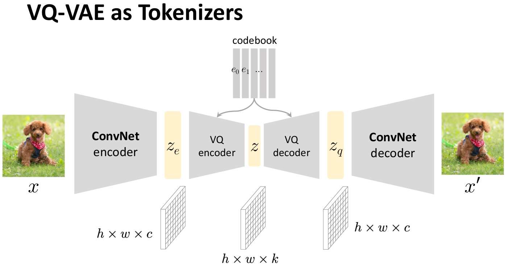
图10 VQ-VAE 作为分词器:图像 → 特征图 → 逐位置量化 → 离散 token 序列 → 解码重建。
编码器输出特征图 \(H \times W \times D\)，对每个位置 \((i,j)\) 独立做向量量化，得到 \(H \times W\) 个离散 token；解码器（ConvNet 或 Transformer）从该 token 网格重建图像。例如:\(16\times 16\) 网格、码本大小 512，即 256 个 token 表示一图。
空间隐表示（spatial latents）下，若假设先验为 i.i.d.，则与真实 token 的强空间/序列相关性不符，直接从前验采样难以得到可用样本:
| 问题 | 说明 |
|---|---|
| 先验 \(p(z)\) 常取为 i.i.d. | 如 \(z_{ij} \sim \text{Categorical}(1/K)\)，位置间独立 |
| 真实 token 高度相关 | 相邻 patch、词序等具有强依赖 |
| i.i.d. 采样质量差 | 得到杂乱无章的图像 |
做法:先训练 VQ-VAE 作为分词器；再在离散空间上用自回归模型（PixelCNN、Transformer）或扩散模型学习 \(p(z_1, \ldots, z_N)\)。生成时先采样得到结构化 token 序列，再经 VQ-VAE 解码器得到图像。即 VQ-VAE-2（VQ-VAE + PixelCNN）、VQ-GAN 等两阶段生成的基本范式。
本节基于项目 code/dl/ae/vq_vae/ 说明关键模块。训练流程:\(x\) → 编码得 \(z_e\) → 最近邻得 \(z_q\) → 直通得 \(z_q^{ST}\) → 解码得 \(\hat{x}\) → 计算三项损失并反传，更新 \(E_\phi\)、\(D_\theta\) 与 codebook。生成:可均匀采样 codebook 索引再解码；实际多在此离散空间上另训自回归模型（如 PixelCNN）建模 \(p(z)\) 后采样解码。
Encoder:卷积下采样 + 残差块；Codebook:nn.Embedding(n_embedding, dim)；Decoder:转置卷积上采样。以 MNIST 为例:28×28 → 14×14 → 7×7，再解码回 28×28。
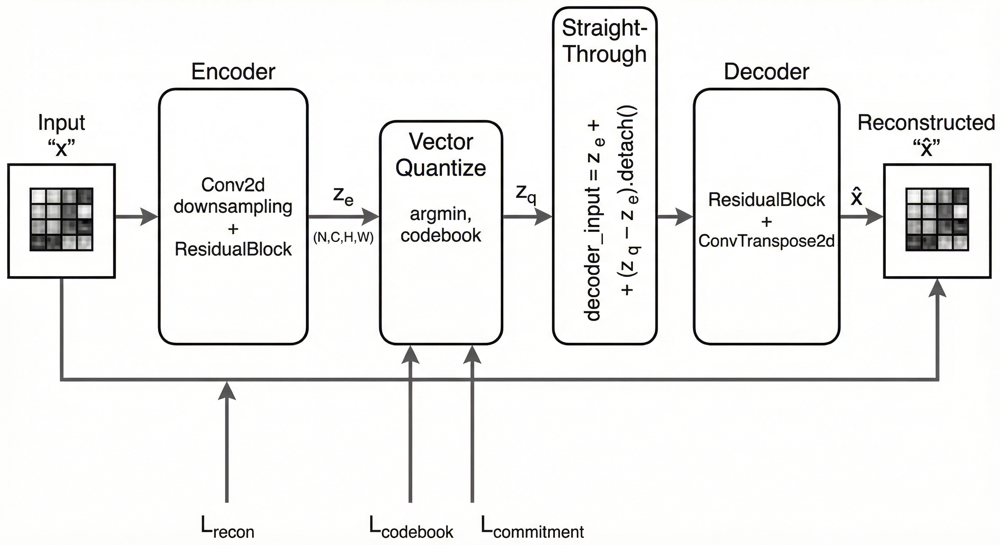
图11 VQ-VAE 代码实现的网络框架:Encoder → \(z_e\) → VQ（最近邻 + 直通）→ Decoder → \(\hat{x}\)。
class VQVAE(nn.Module):
"""VQ-VAE 模型（CNN 架构）"""
def __init__(self, input_dim, dim, n_embedding):
super().__init__()
# Encoder: 卷积下采样
self.encoder = nn.Sequential(
nn.Conv2d(input_dim, dim, 4, 2, 1), # 28x28 -> 14x14
nn.ReLU(),
nn.Conv2d(dim, dim, 4, 2, 1), # 14x14 -> 7x7
nn.ReLU(),
nn.Conv2d(dim, dim, 3, 1, 1),
ResidualBlock(dim),
ResidualBlock(dim)
)
# Codebook:可学习的嵌入表
self.vq_embedding = nn.Embedding(n_embedding, dim)
self.vq_embedding.weight.data.uniform_(-1.0 / n_embedding, 1.0 / n_embedding)
# Decoder: 转置卷积上采样
self.decoder = nn.Sequential(
nn.Conv2d(dim, dim, 3, 1, 1),
ResidualBlock(dim),
ResidualBlock(dim),
nn.ConvTranspose2d(dim, dim, 4, 2, 1), # 7x7 -> 14x14
nn.ReLU(),
nn.ConvTranspose2d(dim, input_dim, 4, 2, 1) # 14x14 -> 28x28
)
self.n_downsample = 2forward:编码 → 最近邻量化得 \(z_q\) → 直通 ze + (zq - ze).detach() → 解码。
def forward(self, x):
# 编码: x -> z_e
ze = self.encoder(x) # (N, C, H, W)
# 向量量化:最近邻查找
embedding = self.vq_embedding.weight.data # (K, C)
N, C, H, W = ze.shape
K, _ = embedding.shape
embedding_broadcast = embedding.reshape(1, K, C, 1, 1)
ze_broadcast = ze.reshape(N, 1, C, H, W)
distance = torch.sum((embedding_broadcast - ze_broadcast) ** 2, 2)
nearest_neighbor = torch.argmin(distance, 1) # (N, H, W)
# zq: (N, C, H, W)
zq = self.vq_embedding(nearest_neighbor).permute(0, 3, 1, 2)
# 直通估计器:前向用 zq，反向梯度传给 ze
decoder_input = ze + (zq - ze).detach()
x_hat = self.decoder(decoder_input)
return x_hat, ze, zq即 \(z_q^{ST} = z_e + (z_q - \text{sg}(z_e))\)，解码器输入为 decoder_input。
重构:MSE(\(\hat{x}\), \(x\))。Codebook 损失:MSE(ze.detach(), zq)（仅更新 codebook）。Commitment 损失:MSE(ze, zq.detach())（仅更新编码器）。权重 \(\beta=0.25\)。
def loss_function(x_hat, x, ze, zq, embedding_loss_weight=1.0, commitment_loss_weight=0.25):
recon_loss = F.mse_loss(x_hat, x)
# 将 codebook 向量拉向 ze
embedding_loss = F.mse_loss(ze.detach(), zq)
# 将 ze 拉向 codebook 向量
commit_loss = F.mse_loss(ze, zq.detach())
total_loss = recon_loss + embedding_loss_weight * embedding_loss + commitment_loss_weight * commit_loss
return total_loss, recon_loss, embedding_loss, commit_lossencode(x):返回 codebook 索引 (N, H, W)，供自回归等使用。decode(indices):由索引查 codebook 再解码为图像。二者均用 @torch.no_grad()。
@torch.no_grad()
def encode(self, x):
"""编码为 codebook 索引 (N, H, W)，供自回归模型等使用"""
ze = self.encoder(x)
# 与 forward 中相同的最近邻查找
embedding = self.vq_embedding.weight.data
N, C, H, W = ze.shape
K, _ = embedding.shape
embedding_broadcast = embedding.reshape(1, K, C, 1, 1)
ze_broadcast = ze.reshape(N, 1, C, H, W)
distance = torch.sum((embedding_broadcast - ze_broadcast) ** 2, 2)
nearest_neighbor = torch.argmin(distance, 1)
return nearest_neighbor
@torch.no_grad()
def decode(self, discrete_latent):
"""从索引 (N, H, W) 解码为图像"""
zq = self.vq_embedding(discrete_latent).permute(0, 3, 1, 2)
return self.decoder(zq)每 batch:x_hat, ze, zq = model(x) → loss_function(...) → loss.backward() → optimizer.step()。配置示例:input_dim=1，dim=64，n_embedding=32，commitment_loss_weight=0.25。
for x, label in train_loader:
x = x.to(device)
x_hat, ze, zq = model(x)
loss, recon_loss, embedding_loss, commit_loss = loss_function(
x_hat, x, ze, zq, embedding_loss_weight, commitment_loss_weight)
optimizer.zero_grad()
loss.backward()
optimizer.step()重构:x_hat, ze, zq = model(x)，对比 \(x\) 与 \(\hat{x}\)。从 codebook 生成:indices = model.encode(x) → model.decode(indices) 可视化解码；若要从先验生成，需在离散空间上另训 PixelCNN 等（见 train_pixelcnn.py、gen_with_pixelcnn.py）。
从测试集取样本，经 VQ-VAE 编码→量化→解码，得到重构图像:
# 推理1 - 重建
model.eval()
with torch.no_grad():
x, _ = next(iter(test_loader))
x_test = x[:sample_size].to(device)
x_hat, ze, zq = model(x_test)
original_images = x_test.cpu()
reconstructed_images = x_hat.cpu()说明:输入 \(x\) 经编码得 \(z_e\)，向量量化得 \(z_q\)，解码得 \(\hat{x}\)。对比原图与重构图可评估离散 codebook 对信息的保留程度。
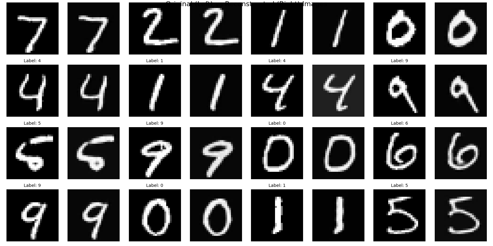
图12 VQ-VAE 的重建能力:左列为原始图像，右列为重构图像。
若仅从 codebook 均匀采样 token 再解码，生成质量差（i.i.d. 先验与真实 token 相关性不符）。两阶段生成:先在离散空间上训练 PixelCNN 建模 \(p(z_{1:N})\)，再从中采样 token 序列，经 VQ-VAE 解码器得到图像:
# 推理2 - 生成（需先训练 PixelCNN 先验）
model.eval()
with torch.no_grad():
# 从 PixelCNN 采样离散 token 序列 (N, H, W)
indices = pixelcnn_model.sample(batch_size, shape=(h, w))
generated_images = model.decode(indices).cpu()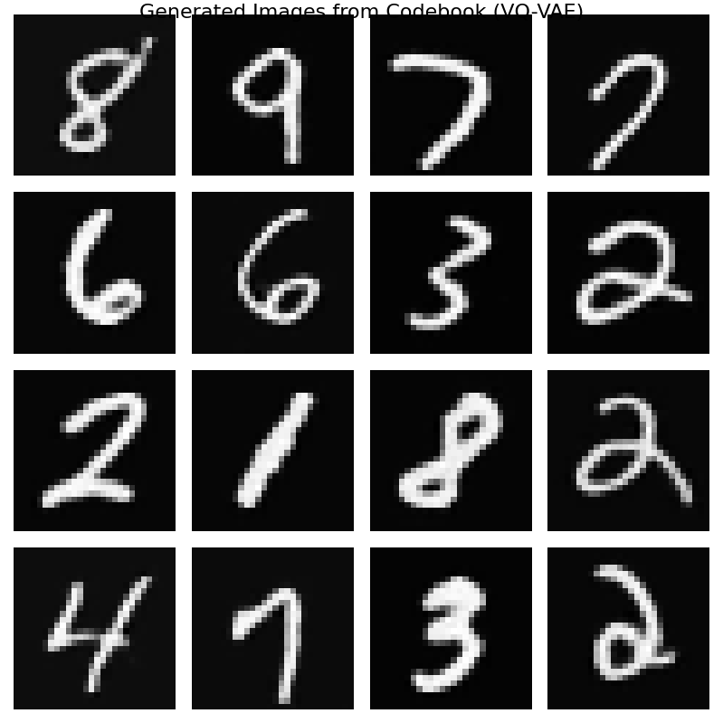
图13 PixelCNN + VQ-VAE 的生成能力:从学习到的离散先验采样 token，再解码为图像。
| 特性 | 标准 VAE | VQ-VAE |
|---|---|---|
| 潜在变量 | 连续 \(z \sim q_\phi(z \mid x)\) | 离散 \(z = e_k\)，\(k = \arg\min_j \lVert z_e - e_j \rVert^2\) |
| 正则化 | KL 散度 | Codebook 损失 + Commitment 损失 |
| 先验 | \(p(z)=\mathcal{N}(0,I)\) | 训练时可视为在 codebook 上均匀；生成时常另训自回归先验 |
| 梯度传递 | 重参数化 | 直通估计器穿过量化层 |
VQ-VAE 的真正价值在于将高维数据（图像、语音等）压缩为离散符号序列，为符号化深度学习与大规模生成模型（如 DALL·E、Stable Diffusion 的 VQ-GAN 阶段）提供基础；而非作为单独的生成模型使用。
复现:项目内 vq_vae/vq_vae.py、train_infer.py 及配置文件可复现训练与重构；完整生成需再训离散先验（如 PixelCNN）。